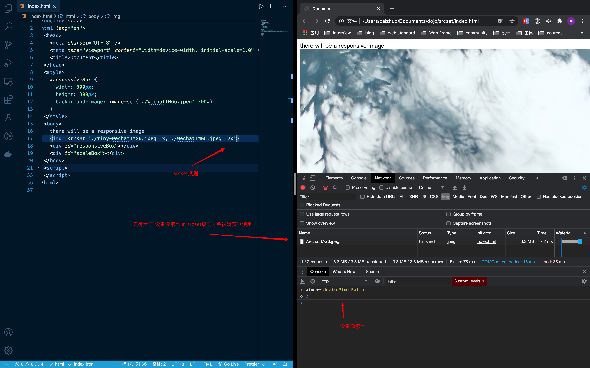
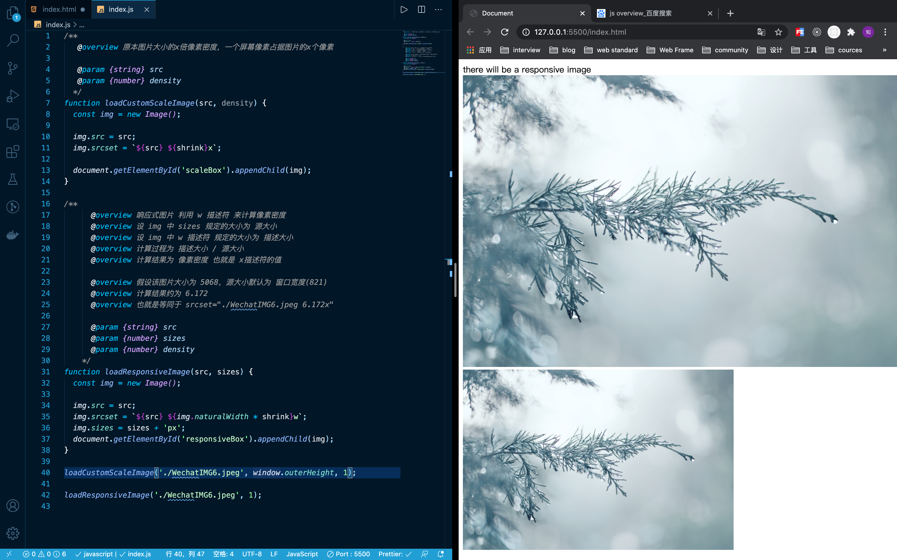

响应式图片
devicePixelRatio 像素设备比
devicePixelRatio = 物理像素数量 / dips
dips 是 设备独立像素，可以理解为 css 的逻辑像素，可以通过 srceen.width * screen.height 或者 document.documentElement.clientWidth * document.documentElement.clientHeight 获取
在 IOS 上 一般值为 1 或 2 。(但是IPhoneX貌似为3)
假设 dips 为 1400x900 。即使 在 retina-mac 上更改了分辨率，由 2800 * 1800 改为 1920x120。
devicePixelRatio 仍然为 2，而不是1.5。
在 Android 上，由于不同浏览器厂商有不同的策略，可以直接按公式来计算。
实现不同分辨率的情景下使用不同的图片
srcset 属性可以用来在不同分辨率设备上使用不同图片
达到在不同设备上使用不同大小图片的效果，以节省带宽以及流量，获得更好地体验

一般会配合 媒体查询 使用，因为在移动端的 retina 屏幕上，devicePixelRatio 也是2。
w 描述符
w 描述符前的数字代表浏览器提供多少物理像素来渲染图片，而 sizes 属性的值代表图片的逻辑像素大小。
最后计算的结果为 w / sizes = deviceDensity 得到了 像素密度。
这个像素密度就用来计算图片一个逻辑像素包含了多少物理像素。
像素密度的概念和像素设备比的概念其实是相同的，只不过像素密度是专注于局部的元素，而像素设备比是专注于浏览器全局。
最后浏览器会用计算出来的像素密度和 window.divicePixelRatio 作比较，只有大于 window.devicePixelRatio 的规则，才会被使用。
利用w描述符实现不同宽度设备加载不同图片
<img src="./tiny-WechatIMG6.jpeg" srcset="./tiny-WechatIMG6.jpeg 500w, ./WechatIMG6.jpeg 1000w" sizes="500px" width="500"/>
在 devicePixelRatio 为 1 的时候 会使用 tiny-WechatIMG6.jpeg
在 devicePixelRatio 为 2 的时候 会使用 tiny-WechatIMG6.jpeg
而另一种情况
<img src="./tiny-WechatIMG6.jpeg" srcset="./tiny-WechatIMG6.jpeg 2000w, ./WechatIMG6.jpeg 3000w" sizes="1000px" width="500"/>
浏览器会将两张图片都加载，因为 两个像素密度都大于了 devicePixelRatio
利用w描述符实现响应式图片
/*
响应式图片 利用 w 描述符 来计算像素密度
设 img 中 sizes 规定的大小为 资源大小
设 img 中 w 描述符 规定的大小为 描述大小
计算过程为 描述大小 / 资源大小
计算结果为 像素密度 也就是 x描述符的值
假设该图片大小为 5068，资源大小默认为 窗口宽度(821)，指定为窗口宽度是为了让图片宽度等同于屏幕宽度
计算结果约为 6.172，也就是一个逻辑像素需要6.172个物理像素来熏染
*/
function loadResponsiveImage(src, sizes) {
const img = new Image();
img.src = src;
img.srcset = `${src} ${img.naturalWidth}w`;
img.sizes = sizes + 'px';
document.getElementById('responsiveBox').appendChild(img);
}

SVG
当想使用响应式图片的时候，可以使用SVG来达到相同的效果，在移动端设备和桌面设备上SVG同样有很好的支持。
对SVG可以进行压缩，使用 优化工具 可以显著减少SVG图片的大小